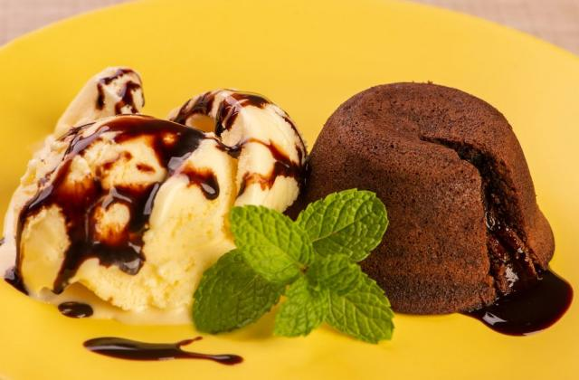

Petit Gateau

Description
100% Pure chocolate mini cake, that when it's open release a mouthwatering melted chocolate splash from heaven.
Ingredients
- 200 g dark chocolate
- 2 tbsp of butter
- 2 eggs
- 4 tbsp of granulated sugar
- 2 tbsp of self raising flour
- Vanilla ice cream
Steps
- Preheat the oven to 220º C.
- Melt the chocolate with the butter in the microwave for 3 minutes.
- In a bowl, we join the eggs and sugar. Mix the dough gently until smooth.
- Add the previously melted chocolate and mix well. Also add the flour 1 tbsp at the time.
- Spread the molds with a little butter. Put the dough into the molds and then take them to the oven.
Let the bake for 15 minutes.
- Finally, remove them from the oven and take off the molds with the help of a knife. Serve immediately
along with the ice cream. Sprinkled with sugar glass.